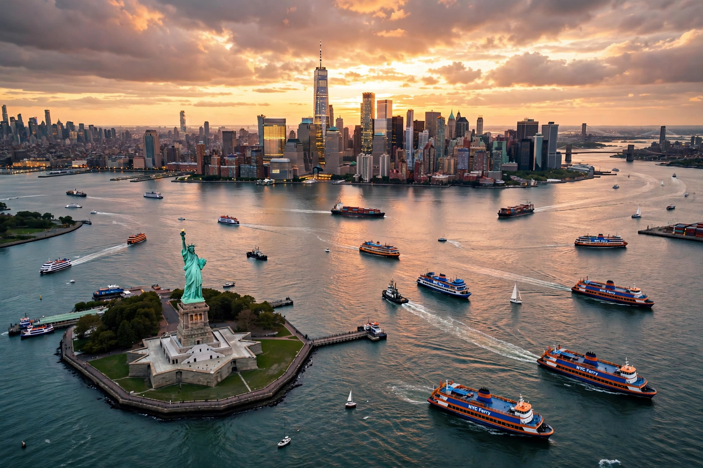

New York Harbor is the collection of rivers, bays, tidal estuaries and port facilities at the mouth of the Hudson River near the East River tidal strait, where they empty into New York Bay and the Atlantic Ocean. It is one of the world's largest natural harbours.
The harbour includes Upper New York Bay, Lower New York Bay, the Narrows between Staten Island and Brooklyn, the Hudson, East and Harlem Rivers, Kill Van Kull, Arthur Kill, Newark Bay, Jamaica Bay and Raritan Bay. Islands include Manhattan, Staten, Long Island shores, Governors Island, Liberty Island and Ellis Island.
Lenape people lived around the harbour for millennia. Giovanni da Verrazzano entered in 1524 and Henry Hudson in 1609, leading to Dutch New Amsterdam and then British and American New York. The harbour was the principal point of entry for millions of immigrants processed at Ellis Island (1892–1954), overlooked by the Statue of Liberty (1886).
The Port of New York and New Jersey is among the busiest US ports, especially for container shipping on the New Jersey side. Water quality has improved greatly since the 1970s, with returning fish, oysters projects and marine mammals.